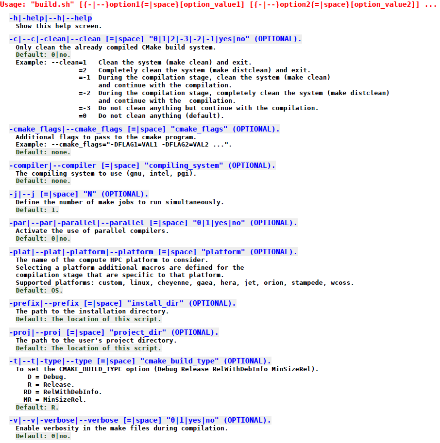
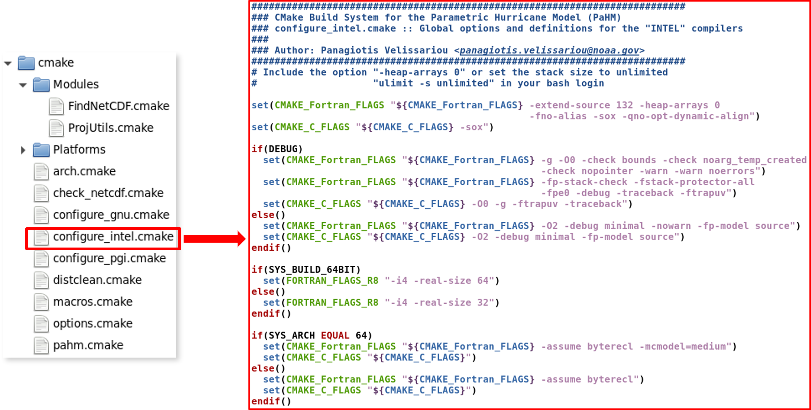

|
|
version 1.0.0
Parametric Hurricane Modeling System
|

|
|
|
version 1.0.0
Parametric Hurricane Modeling System
|
|
The Parametric Hurricane Modeling System is not just another parametric atmospheric model but rather an atmospheric modeling system that contains multiple TC models that can be activated during run time to generate the required atmospheric wind fields. Currently, the core parametric models in PaHM are the Holland 1980 and the Generalized Asymmetric Vortex Holland models. In development is the process of extendeding the built-in I/O capabilities (CSV, NetCDF and GRIB interfaces) to allow for the digestion and the manipulation of different data formats.
To calculate its wind fields, PaHM reads "best track" type of files (e.g., those produced by the National Hurricane Center to generate gridded atmospheric fields (usually, 10-m wind velocities and atmospheric pressures converted to mean sea level). The file formats currently recognized by PaHM are: \(\itchar{a}\) a/b-deck, \(\itchar{b}\) HurDat2, \(\itchar{c}\) IBTrACS and \(\itchar{d}\) TCVitals. PaHM has a built-in CSV I/O interface therefore, it can read and write any of these files in ASCII format.
The source code of PaHM is publicly available from the GitHub repository: https://github.com/noaa-ocs-modeling/PaHM (binary distributions of PaHM are not currently available).
The online documentation of the modeling system is hosted by GitHub Pages:
PaHM can be downloaded using one of the following methods:
Clone the source code from GitHub using the command:
The source will be downloaded into the target directory PaHM.
Download the source archive using the command:
and extract the sources in the PaHM directory by issuing the following commands:
Even if an archive is sufficient, it is advisable to use the distributed version control system Git to follow the PaHM development to merge easily to new versions. New Git users are invited to read some of the online guides to get familiar with vanilla Git concepts and commands:
After downloading PaHM, let us look at the physical directories and the source code and configuration files that come with the system. The ''PaHM ROOT'' directory contains the source and all configuration files required to build and run PaHM (see Figure [1]). The directories of interest are the src, scripts, cmake and inputs directories.
|
| Figure 1: Directory tree of the PaHM modeling system. |
The build system of PaHM is designed to compile the model requiring a minimal intervention from the user. PaHM supports different compiler families and various Linux/UNIX computing platforms (HPC, clusters, personal desktops, etc).
To compile PaHM the following programs and libraries are required:
For a successful compilation and run of PaHM, it is required that the model and the NetCDF/HDF5 libraries are built with the same compiler family (not necessarily the same version). This requirement is important as the creation of the NetCDF output files will as this is the case of all modeling systems that use these libraries. Currently, PaHM supports the GNU, Intel and Portland Group/NVidia compiler families.
To build PaHM the user should run the build.sh bash script located (a link to the scripts/build.sh) in the root directory of the downloaded source code (Figure [1]). The following steps will help you to build PaHM on your local machine or your cluster of choice.
Change the working directory to the PaHM root:
Run the build script as:
to get the following screen output:
if the above settings are correct, type "y + <ENTER>" to continue with the compilation. Upon successful compilation the PaHM executable will be placed into the "bin" directory at the PaHM root.
The build script tries to determine the host OS, either Linux or, MacOSX (in Windows the user should try to compile PaHM inside a Windows Subsystem for Linux - WSL, or another Linux setup). By default, the build script will use the native Fortran and C compilers (usually gcc and gfortran) for the compilation stage. The script accepts options to further customize the compilation process and it is suggested that the user should at first run the script as: ./build.sh --help to see all available options as shown in Figure [2].
 |
| Figure 2: Build script (build.sh) options. |
The two influential options of the script are --compiler and --platform where the user can supply what compiler family to use and what platform to compile PaHM for (in the cmake folder there are customized platform cmake modules that the script loads per user's request). For example, to compile PaHM using the Intel compilers on the Orion HPC cluster of Mississippi State University, the user should run the script as:
Figure [2], shows all currently available options in "build.sh" accompanied by the detailed explanation for each option.
The directory "PaHM/cmake" contains the CMake modules and auxiliary files used for the configuration of the CMake based build system used by PaHM, so that many setup and com[ilation steps can be automated. The most common steps to build, and install software based on CMake, like PaHM are:
cmake ../).make).make install).In the parent directory of the "build" folder (PaHM/) it should be located a file called "CMakeLists.txt" that CMake requires for its configuration. This "CMakeLists.txt" in addition of calling CMake modules from the PaHM/cmake folder, it also contains CMake directives that modify the behavior of the configuration process. In step (2) above the user can supply additional flags defined in "CMakeLists.txt" and in PaHM/cmake modules or global CMake flags that might influence the compilation stage as shown in the following example:
The PaHM CMake system will pick-up the values of these variables if set in the user's environment, and continue with the configuration with these variable definitions, for example:
The user is encouraged to take a look of the "CMakeLists.txt" and the PaHM/cmake modules to gain an understanding on how the CMake build system in PaHM works. By design, the CMake build system in PaHM uses the user's environment as well as the command line interchangeably to pick-up the values of any user supplied variables related to PaHM. The main CMake module groups in PaHM are (a) the System group, (b) the Compiler group and (c) the Platform group (see Figure [1]).
(a) System group : Consists of the core CMake modules required to configure and compile PaHM:
| arch.cmake : | Architecture specifications | |
| check_netcdf.cmake : | Checks for the availability and usability of the netcdf libraries | |
| distclean.cmake : | Incorporates the "distclean" rule into the cmake generated makefiles | |
| macros.cmake : | Macros to aid the compile/link processes | |
| options.cmake : | Definitions of what libraries and executables to build (supported static and shared libraries for PaHM) | |
| pahm.cmake : | Definitions to build PaHM, libpahm.a and/or libpahm.so; lists all required sources for each build | |
| Modules : | In this folder are contained the utility and "find" modules for CMake (e.g., FindNetCDF.cmake) required to set depended variable for the configuration and compilation statges |
(b) Compiler group : The modules in the compiler group define the compiler flags for the three compiler families supported by PaHM (GNU, Intel and PGI). Supplying the compiler option to the "build.sh", as discussed discussed in section [The Build System], the script loads the proper compiler module: "configure_COMPILER.cmake", where: COMPILER = [one of gnu, intel, pgi] In the right panel of Figure [3], are shown the contents of the module file for "intel" that is, the definitions of the flags passed to the compiler during the compilation and link stages. The user may modify the file directly to fit particular project's needs or, to pass the relevant compiler flags via the "build.sh", for example:
 |
| Figure 3: CMake modules for the PaHM supported compilers. |
(c) Platform group : The folder "PaHM/cmake/Platforms" contains the CMake modules for the PaHM supported computing platforms (HPC clusters or local desktops). The list of predefined platform modules are shown in Figure [4] (left panel) where in the right panel are shown the contents of the platform file for "orion" using the "intel" compiler. This file is loaded by CMake when the build script is run as:
When any of these modules is loaded, it sets the environment variables for the loaded libraries (currently NetCDF and HDF5) in an HPC cluster or a local desktop. Computing system configurations change from time to time and the user might need to directly modify the module file to reflect the OS changes or, to use the "custom" platform (e.g., configure_intel.custom.cmake) and incorporate the changes there.
|
| Figure 4: CMake modules for the PaHM supported computing platforms. |
Additional platform modules can be added with ease, by copying one of the existing module files in "PaHM/cmake/Platforms" to say: PaHM/cmake/Platforms/configure_intel.my_own.cmake. This new module file should first be modified to reflect the settings of the host platform and then run the build script as:
to use the newly developed platform module file.
Before you can use PaHM, you must have a working PaHM installation as described in section [The Build System]. Assuming that PaHM is installed in the "PaHM/bin" folder (default), the model may be run as: bin/pahm --help to print the list of the available command line arguments to the model. By default, running PaHM without arguments as the model tries to find its default control file (pahm_control.in) located in the current working directory. The user may supply another control file by running PaHM as:
A typical control file looks like the one shown in Figure [5]. It is the user's responsibility to create the proper control file to be used by PaHM for the particular application.
|
| Figure 5: Sample PaHM input configuration (control) file. |
The control file is required either running PaHM as a standalone model or as a coupled modeling component.
This section is dedicated to the NEMS/NUOPC coupling onfiguration